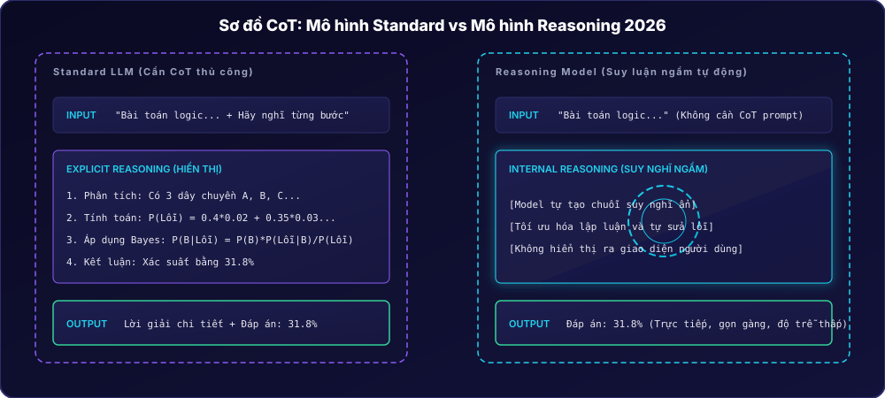
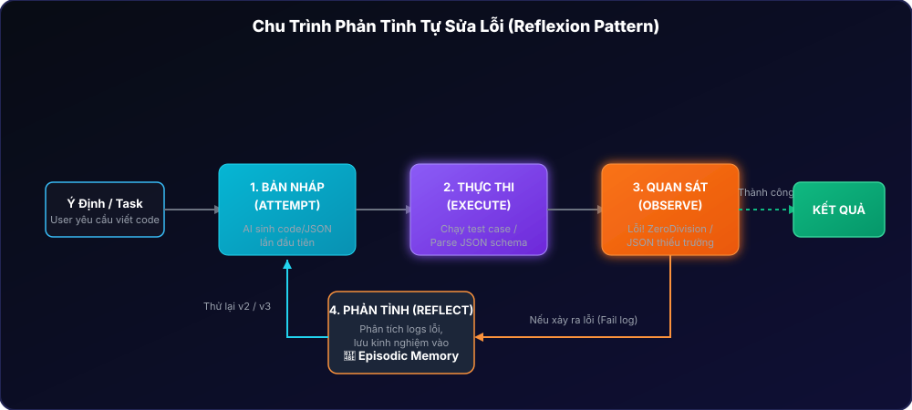
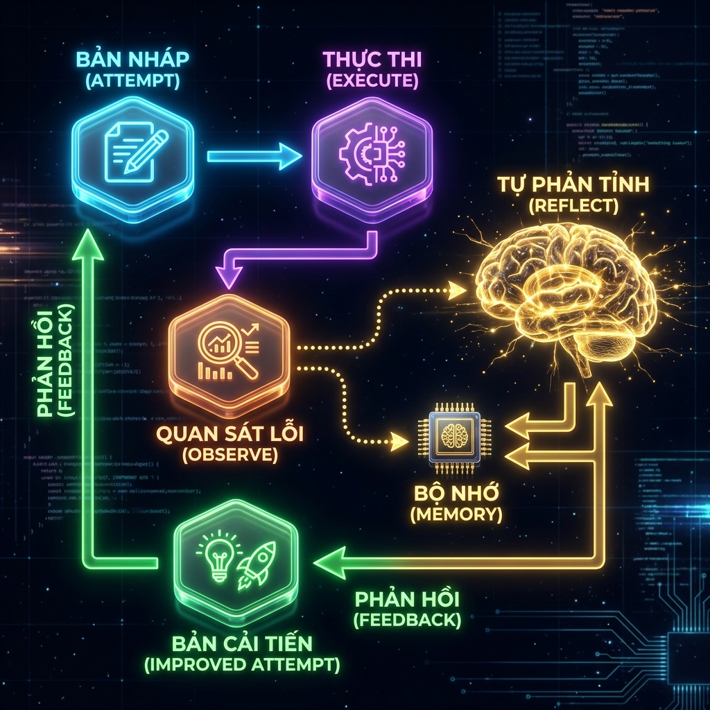
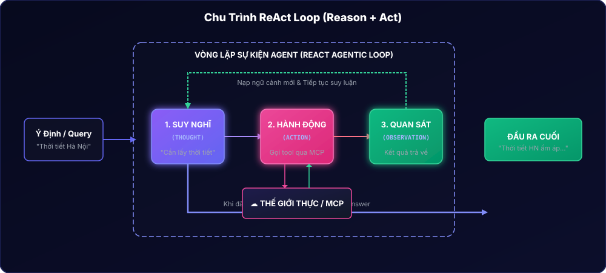
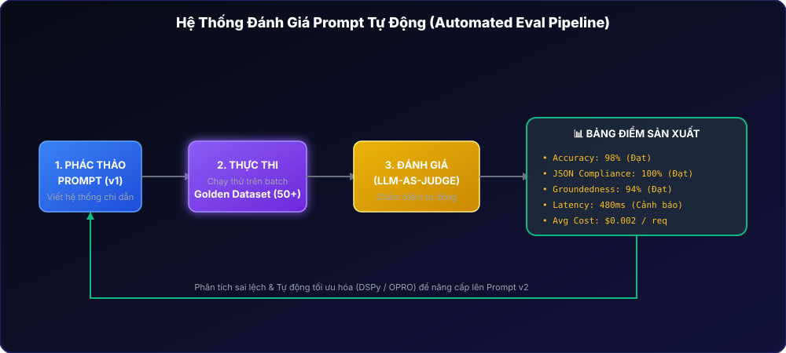

Session 03 — Prompt Engineering - Nâng cao
1.1 Cơ chế hoạt động của Chain-of-Thought
Chain-of-Thought (CoT) là một kỹ thuật thúc đẩy mô hình ngôn ngữ lớn (LLM) tạo ra các bước suy luận trung gian trước khi đưa ra câu trả lời cuối cùng. Việc viết ra các bước logic này giúp định hình luồng chú ý (Attention) và làm giảm khả năng sai lệch thông tin trong các tác vụ tính toán phức tạp.
Các biến thể CoT phổ biến bao gồm:
- Zero-shot CoT: Kích hoạt bằng câu chỉ dẫn đơn giản:
"Hãy suy nghĩ từng bước"(Let's think step by step). - Manual CoT: Cung cấp ví dụ Few-shot có sẵn các bước lập luận chi tiết để mô hình bắt chước cách suy luận.
- Auto-CoT: Tự động hóa việc tạo ra các ví dụ suy luận từ tập dữ liệu sẵn có.
Mỗi bước suy luận mà LLM xuất ra đóng vai trò như một bộ nhớ nháp (scratchpad). Do LLM sinh text theo cơ chế tuần tự tiếp theo (next-token prediction), việc giữ các lập luận đúng ở trong context window sẽ giúp câu kết luận cuối cùng có xác suất đúng cao hơn rất nhiều.
1.2 Sự dịch chuyển 2026: Khi nào KHÔNG cần CoT?
Với sự phát triển của các **Reasoning Models** (như GPT-5 Pro hay Gemini 3.5 Pro), quá trình suy luận từng bước đã được nhúng ngầm (Internal Chain-of-Thought) thông qua quá trình huấn luyện Reinforcement Learning (học tăng cường). Khi chạy, các model này tự động suy nghĩ trong hệ thống trước khi trả về câu trả lời.
| Dòng mô hình | Độ phức tạp tác vụ | Khuyên dùng CoT? | Giải thích bản chất |
|---|---|---|---|
| Standard Models (GPT-5.5, Claude Fable 5) |
Đơn giản (Phân loại, trích xuất) | ❌ Không | Không mang lại hiệu quả vượt trội, chỉ làm tăng Latency và hóa đơn Token. |
| Standard Models (GPT-5.5, Claude Fable 5) |
Phức tạp (Toán học, Logic, Code) | ✅ Có | Cung cấp không gian lập luận để mô hình giảm thiểu sai sót. |
| Reasoning Models (GPT-5 Pro, Gemini 3.5 Pro) |
Mọi độ khó | ❌ Không | Mô hình tự động kích hoạt tư duy ngầm. Bắt mô hình CoT thủ công sẽ gây "suy luận kép" (double-reasoning) gây tốn tài nguyên. |
| Bất kỳ dòng mô hình nào | Cần truy vết giải trình (Audit Trail) | ✅ Có | Cần thiết khi có yêu cầu giám sát lý do ra quyết định của AI từ phía con người. |

Thực hành: So sánh Standard Model vs. Reasoning Model
Kịch bản: Giải một bài toán logic đan xen trên cả mô hình chuẩn kèm CoT và mô hình suy luận sâu không dùng CoT.
Một đoàn tàu rời ga A lúc 8 giờ sáng với vận tốc 60 km/h. Một đoàn tàu khác rời ga B lúc 9 giờ sáng đi ngược chiều với vận tốc 80 km/h. Khoảng cách giữa hai ga là 340 km. Hai tàu gặp nhau lúc mấy giờ?
Hãy suy nghĩ từng bước một và giải thích cặn kẽ trước khi đưa ra kết quả cuối cùng.Một đoàn tàu rời ga A lúc 8 giờ sáng với vận tốc 60 km/h. Một đoàn tàu khác rời ga B lúc 9 giờ sáng đi ngược chiều với vận tốc 80 km/h. Khoảng cách giữa hai ga là 340 km. Hai tàu gặp nhau lúc mấy giờ?Dán đoạn prompt này vào NotebookLM để tạo podcast thảo luận chuyên sâu về Chain-of-Thought:
Bài tập Lesson 3.1
- Thiết kế Sơ đồ Quyết định (Decision Tree Flowchart): Hãy vẽ một lưu đồ chỉ dẫn rõ ràng cho một kỹ sư AI trong dự án để họ biết khi nào nên đưa CoT vào System Prompt hoặc User Prompt dựa vào loại Model đang sử dụng (Standard vs Reasoning) và độ phức tạp của tác vụ cần xử lý.
- Tối ưu hóa Prompt Thuế TNCN: Cho một prompt tính toán thuế thu nhập cá nhân bị sai kết quả trên mô hình Standard. Hãy viết lại prompt đó bằng cách áp dụng phương pháp Manual CoT (Few-shot CoT) với 2 ví dụ lập luận mẫu chi tiết để định hình chính xác các bước nhân chia thuế theo lũy tiến.
2.1 Self-Consistency & Self-Verification
Để khắc phục nhược điểm của các suy luận đơn tuyến (single reasoning path), chúng ta sử dụng hai kỹ thuật kiểm chứng chính:
- Self-Consistency (Tự nhất quán): Gửi cùng một prompt suy luận nhiều lần (với tham số temperature > 0) để tạo ra một phân phối các câu trả lời. Sau đó lấy biểu quyết đa số (majority vote) để tìm ra câu trả lời xuất hiện nhiều nhất.
- Self-Verification (Tự kiểm chứng): Chia tác vụ làm hai giai đoạn độc lập. Giai đoạn 1 sinh kết quả (Draft), giai đoạn 2 đóng vai trò kiểm toán kiểm tra lại độ tin cậy của các giả định và lập luận trong bản nháp đó.
2.2 Vòng lặp phản tỉnh tự sửa lỗi (Reflexion Pattern)
Năm 2026, các AI Agent chuyên nghiệp ứng dụng mô thức **Reflexion (Phản tỉnh)** để tự sửa lỗi mà không cần sự can thiệp của con người. Thay vì chỉ kiểm tra lý thuyết, agent chạy mã nguồn trong môi trường sandbox, thu hồi thông báo lỗi (Error log), ghi nhớ những gì đã làm sai vào bộ nhớ (Episodic Memory), từ đó điều chỉnh hành vi và sửa đổi mã nguồn ở lượt chạy sau.
| Phương pháp | Cách thức vận hành | Ưu điểm nổi bật | Hạn chế chính |
|---|---|---|---|
| Self-Verification | Tự đọc lại và đánh giá câu trả lời của chính mình. | Chi phí rẻ, thực hiện nhanh chóng ngay trong 1 phiên chat. | Dễ gặp điểm mù (nếu tri thức nền của mô hình sai, nó không tự phát hiện lỗi). |
| Self-Consistency | Chạy song song nhiều lần để biểu quyết đa số. | Độ chính xác rất cao cho các tác vụ toán, đố mẹo logic. | Tốn tài nguyên API và tăng chi phí lên gấp 3-5 lần. |
| Reflexion Pattern | Thử nghiệm thực tế trong môi trường sandbox và học từ log lỗi. | Khắc phục triệt để lỗi cú pháp lập trình và lỗi logic nghiệp vụ. | Thời gian phản hồi chậm, yêu cầu hạ tầng chạy sandbox an toàn. |


Thực hành: Mô phỏng vòng lặp phản tỉnh sửa code
Yêu cầu: Giả lập cách một hệ thống tự động cung cấp log lỗi cho LLM để sửa lỗi logic trong hàm Python.
Hãy viết một hàm Python nhận vào hai số nguyên a và b, trả về kết quả phép chia dưới dạng phân số tối giản (ví dụ chia 4 cho 6 trả về "2/3").<previous_code>
def divide_to_fraction(a, b):
import math
gcd = math.gcd(a, b)
return f"{a//gcd}/{b//gcd}"
</previous_code>
<error_log>
ZeroDivisionError: division by zero when executing divide_to_fraction(5, 0)
</error_log>
Hãy phân tích nguyên nhân gây lỗi trong error_log dựa trên previous_code, giải thích cách phòng tránh lỗi này (đặc biệt khi mẫu số bằng 0) và viết lại phiên bản mã nguồn đã sửa đổi hoàn chỉnh.Bài tập Lesson 3.2
- Thiết kế Agent Tự Sửa JSON: Xây dựng một kịch bản hệ thống tự động kiểm thử định dạng JSON đầu ra của LLM. Nếu JSON bị thiếu các trường bắt buộc, hoặc sai cú pháp ngoặc nhọn, hệ thống sẽ tự động bắt lỗi và gửi trả lại thông tin phản hồi lỗi chi tiết để AI sửa đổi. Hãy viết các prompt chỉ dẫn cho cả 2 bước (Sinh JSON gốc và Tự phản tỉnh sửa lỗi). Giới hạn vòng lặp tự sửa lỗi tối đa là 3 lần.
3.1 Cây tư duy (Tree-of-Thought)
Tree-of-Thought (ToT) mở rộng các kỹ thuật lập luận tuyến tính bằng cách cho phép mô hình khám phá nhiều nhánh suy nghĩ khác nhau song song. Mô hình sẽ đánh giá chất lượng của từng nhánh (ví dụ: gán nhãn: Khả thi, Rất khả thi, hoặc Ngõ cụt) và thực hiện quay lui (Backtracking) để chọn phương án tối ưu nhất.
3.2 Luồng hoạt động ReAct (Reason + Act)
ReAct (Suy luận và Hành động) là mô thức cốt lõi của Agentic AI năm 2026. Thay vì chỉ suy nghĩ thụ động, AI đan xen các bước lập luận với việc tương tác trực tiếp với các công cụ ngoại vi (Tools) thông qua giao thức như MCP (Model Context Protocol). Chu trình chạy như sau:
Thought (Suy nghĩ xem cần làm gì) ➜ Action (Gọi tool để thực thi hành động) ➜ Observation (Ghi nhận kết quả trả về từ môi trường ngoài) ➜ Thought (Tiếp tục suy nghĩ dựa trên thông tin mới)...
| Phương thức suy luận | Đặc điểm cấu trúc chính | Tác vụ phù hợp nhất |
|---|---|---|
| Least-to-Most | Phân rã bài toán lớn thành các bài toán con dễ và giải tuần tự. | Viết tài liệu kỹ thuật dài, viết code có nhiều module liên kết. |
| Tree-of-Thought | Tìm kiếm không gian giải pháp dưới dạng đồ thị cây, tự đánh giá và quay lui. | Giải toán đố Olympic, chơi cờ, tối ưu hóa kiến trúc hạ tầng phần mềm phức tạp. |
| ReAct Loop | Kết hợp suy luận logic và gọi API bên ngoài để cập nhật thông tin thực tế. | Tự động hóa quy trình, tra cứu dữ liệu thời gian thực, tích hợp các công cụ MCP. |

Thực hành: Truy vết (Trace) một chu trình ReAct Agent
Yêu cầu: Quan sát cách một Agent xử lý yêu cầu: "Kiểm tra xem thời tiết hiện tại ở Hà Nội có thích hợp để tổ chức sự kiện ngoài trời không."
User: "Kiểm tra xem thời tiết hiện tại ở Hà Nội có thích hợp để tổ chức sự kiện ngoài trời không."
Thought: Tôi cần kiểm tra thông tin thời tiết hiện tại ở Hà Nội để đánh giá sự kiện ngoài trời. Tôi sẽ gọi công cụ `get_weather`.
Action: get_weather(city="Hanoi")
Observation: {"temperature": "32 C", "condition": "Rainy", "humidity": "85%"}
Thought: Dữ liệu thời tiết cho thấy trời đang mưa (Rainy) và độ ẩm rất cao. Tổ chức sự kiện ngoài trời khi trời mưa sẽ gây rủi ro lớn. Tôi cần kiểm tra thêm chất lượng không khí (AQI) phòng trường hợp mưa nhỏ nhưng không khí quá ô nhiễm. Tôi sẽ gọi công cụ `get_air_quality`.
Action: get_air_quality(city="Hanoi")
Observation: {"aqi": 125, "status": "Unhealthy for Sensitive Groups"}
Thought: Thời tiết có mưa và chất lượng không khí ở mức không tốt cho sức khỏe nhóm nhạy cảm (AQI = 125). Hai yếu tố này đều không ủng hộ việc tổ chức ngoài trời. Tôi sẽ tổng hợp câu trả lời cuối cùng khuyên khách hàng chuyển sự kiện vào trong nhà.
Final Answer: Không nên tổ chức sự kiện ngoài trời tại Hà Nội lúc này. Hiện tại trời đang mưa (32°C, độ ẩm 85%) và chất lượng không khí ở mức kém (AQI 125). Bạn nên chuyển sự kiện vào trong nhà để đảm bảo an toàn.Bài tập Lesson 3.3
- Thiết kế Prompt cho AI Research Agent: Thiết kế một System Prompt đa tầng hoàn chỉnh giúp AI đóng vai trò một chuyên gia phân tích thị trường tự chủ. Agent có khả năng chia nhỏ tác vụ nghiên cứu về một công ty bất kỳ, sử dụng các công cụ giả lập như
google_search(query)vàread_web_page(url)theo mô hình ReAct để thu thập, kiểm chứng thông tin và xuất ra báo cáo tóm tắt dạng bảng Markdown có đính kèm nguồn trích dẫn.
4.1 Tại sao "Vibe-Check" đã lỗi thời?
Trong môi trường sản xuất thực tế năm 2026, việc đánh giá prompt bằng mắt thường cho vài câu test ngẫu nhiên ("vibe-check") không còn được chấp nhận. Một thay đổi nhỏ trong prompt để sửa lỗi cho người dùng này có thể làm xuất hiện lỗi nghiêm trọng cho hàng nghìn người dùng khác (gọi là lỗi thoái lui - Regression). Chúng ta bắt buộc phải xây dựng **Pipeline kiểm thử tự động** trên một tập dữ liệu chuẩn (Golden Dataset).
4.2 Các chỉ số đo lường hiệu năng Prompt (Metrics 2026)
Kỹ sư AI cần theo dõi sát sao 5 chỉ số hiệu năng cốt lõi:
- Task Accuracy (Độ chính xác): Tỷ lệ mô hình đưa ra câu trả lời đúng trên tập dữ liệu test.
- Format Compliance (Độ tuân thủ định dạng): Khả năng xuất đúng JSON/XML schema mà không bị lỗi cú pháp để backend dễ dàng parse dữ liệu.
- Groundedness (Độ trung thực): Đánh giá xem câu trả lời có hoàn toàn dựa vào tài liệu cung cấp (RAG) hay tự suy diễn (Hallucination).
- Latency (Độ trễ): Thời gian xử lý của API.
- Cost per Query (Chi phí): Tính toán lượng token đầu vào và đầu ra dựa trên giá trị API thực tế.
4.3 Kỹ thuật LLM-as-Judge
Đối với các tác vụ viết văn bản tự luận hoặc tóm tắt không có đáp án cứng nhắc, hệ thống sử dụng một mô hình ngôn ngữ lớn mạnh mẽ hơn (như Claude Fable 5 hoặc GPT-5.5) đóng vai trò làm Giám khảo (LLM-as-Judge) để chấm điểm tự động các câu trả lời dựa theo các tiêu chí (Rubric) chi tiết mà kỹ sư thiết lập.

Thực hành: Thiết kế Rubric chấm điểm với LLM-as-Judge
Kịch bản: Thiết kế một System Prompt để AI làm Giám khảo chấm điểm bài viết tóm tắt của một mô hình khác dựa theo các luật định sẵn.
Bạn là một giám khảo chuyên nghiệp đánh giá chất lượng tóm tắt văn bản. Hãy đánh giá bài tóm tắt của học viên dựa trên văn bản gốc được cung cấp.
<rubric>
1. Độ chính xác thông tin (Thang điểm 1-5):
- 5 điểm: Mọi thông tin trong bài tóm tắt đều có nguồn từ văn bản gốc, không bịa đặt thêm.
- 3 điểm: Có 1-2 chi tiết suy diễn ngoài văn bản.
- 1 điểm: Chứa nhiều thông tin sai lệch nghiêm trọng.
2. Độ ngắn gọn (Thang điểm 1-5):
- 5 điểm: Bài viết dưới 150 từ và tóm gọn được đầy đủ các ý lớn.
- 3 điểm: Bài viết dài dòng (150-250 từ).
- 1 điểm: Bài viết quá dài (>250 từ) hoặc quá ngắn không đủ thông tin.
3. Định dạng đầu ra (Đạt/Không đạt):
- Đạt: Bài viết sử dụng bullet points để chia rõ các ý chính.
- Không đạt: Bài viết trình bày dạng một đoạn văn liền mạch không phân nhóm.
</rubric>
<original_text>
[Nhập văn bản gốc tại đây]
</original_text>
<summary_to_evaluate>
[Nhập bài tóm tắt cần chấm tại đây]
</summary_to_evaluate>
Hãy trả về kết quả đánh giá chi tiết theo định dạng JSON với cấu trúc:
{
"accuracy_score": [điểm],
"brevity_score": [điểm],
"format_compliance": "Đạt/Không đạt",
"explanation": "[Giải thích cặn kẽ lý do chấm điểm]"
}Bài tập Lesson 3.4
- Thiết kế Golden Dataset mẫu: Tạo một bảng dữ liệu kiểm thử gồm ít nhất 10 dòng đầu vào và kết quả mẫu (Ground Truth) tương ứng cho tác vụ: Phân loại mức độ khẩn cấp (Thấp, Trung bình, Cao) của email khiếu nại khách hàng.
- Lập kịch bản đánh giá tự động: Hãy viết các bước bằng mã giả (Pseudocode) hoặc mô tả quy trình logic để kiểm tra xem một prompt có vượt qua kỳ thi đánh giá hay không: Dữ liệu email đi qua prompt phân loại -> Đầu ra được kiểm tra cú pháp JSON (nếu lỗi JSON -> 0 điểm) -> So sánh kết quả phân loại của AI với nhãn Ground Truth (đo Accuracy) -> Xuất báo cáo hiệu năng tổng quát.